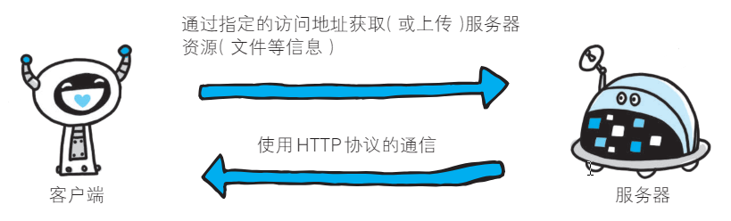
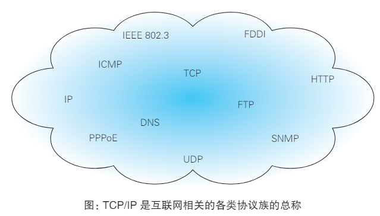
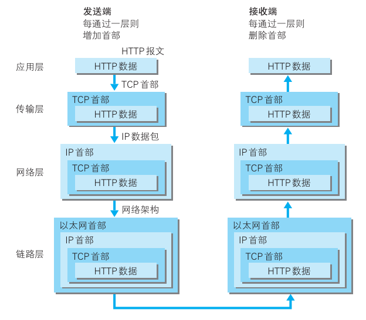
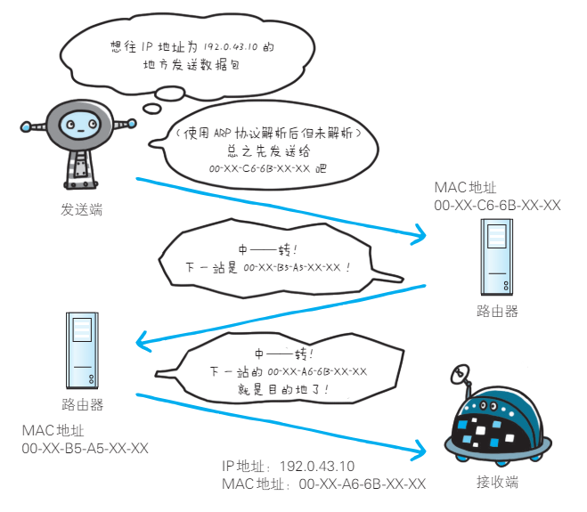
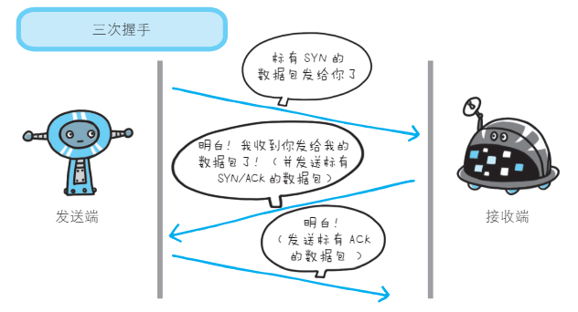
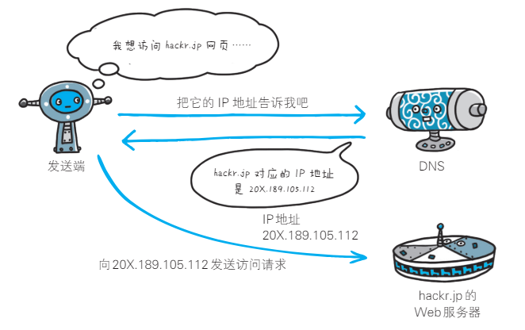
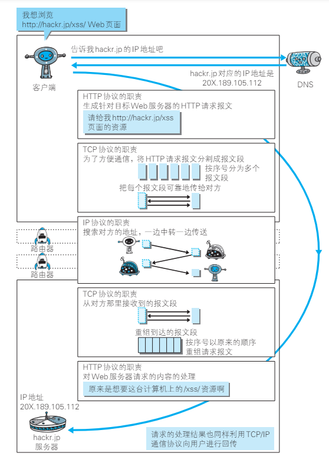
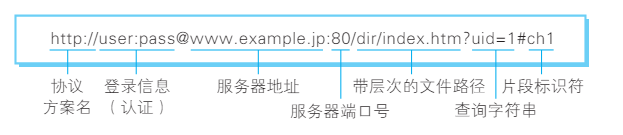

01.了解Web及网络基础
1.1 使用HTTP协议访问Web
Web 页面当然不能凭空显示出来。根据 Web 浏览器地址栏中指定的 URL，Web 浏览器从 Web 服务器端获取文件资源（resource）等信息，从而显示出 Web 页面。像这种通过发送请求获取服务器资源的 Web 浏览器等，都可称为客户端（client）。

Web 使用一种名为 HTTP（HyperText Transfer Protocol，超文本传输协议）的协议作为规范，完成从客户端到服务器端等一系列运作流程。而协议是指规则的约定。可以说，Web 是建立在 HTTP 协议上通信的。
现在已提出了 3 项 WWW 构建技术，分别是：把 SGML（Standard Generalized Markup Language，标准通用标记语言）作为页面的文本标记语言的 HTML（HyperText Markup Language，超文本标记语言）；作为文档传递协议的 HTTP ；指定文档所在地址的 URL（Uniform Resource Locator，统一资源定位符）。WWW 这一名称，是 Web 浏览器当年用来浏览超文本的客户端应用程序时的名称。现在则用来表示这一系列的集合，也可简称为 Web。
1.2 网络基础 TCP/IP
为了理解 HTTP，我们有必要事先了解一下 TCP/IP 协议族。通常使用的网络（包括互联网）是在 TCP/IP 协议族的基础上运作的。而 HTTP 属于它内部的一个子集。
1.2.1 TCP/IP 协议族
计算机与网络设备要相互通信，双方就必须基于相同的方法。如，如何探测到通信目标、由哪一边先发起通信、使用哪种语言进行通信、怎样结束通信等规则都需要事先确定。不同的硬件、操作系统之间的通信，所有的这一切都需要一种规则。而我们就把这种规则称为协议（protocol）。

1.2.2 TCP/IP 的分层管理
-
TCP/IP 协议族里重要的一点就是分层。
- TCP/IP 协议族按层次分别分为以下 4 层：应用层、传输层、网络层和数据链路层。
- 把 TCP/IP 层次化是有好处的。比如，如果互联网只由一个协议统筹，某个地方需要改变设计时，就必须把所有部分整体替换掉。而分层之后只需把变动的层替换掉即可。把各层之间的接口部分规划好之后，每个层次内部的设计就能够自由改动了。
-
TCP/IP 协议族各层的作用如下：
- 应用层
- 应用层决定了向用户提供应用服务时通信的活动。TCP/IP 协议族内预存了各类通用的应用服务。
- 比如，FTP（File Transfer Protocol，文件传输协议）和 DNS（Domain Name System，域名系统）服务就是其中两类。HTTP 协议也处于该层。
- 传输层
- 传输层对上层应用层，提供处于网络连接中的两台计算机之间的数据传输。
- 在传输层有两个性质不同的协议：TCP（Transmission Control Protocol，传输控制协议）和 UDP（User Data Protocol，用户数据报协议）。
- 网络层（又名网络互连层）
- 网络层用来处理在网络上流动的数据包。数据包是网络传输的最小数据单位。该层规定了通过怎样的路径（所谓的传输路线）到达对方计算机，并把数据包传送给对方。
- 与对方计算机之间通过多台计算机或网络设备进行传输时，网络层所起的作用就是在众多的选项内选择一条传输路线。
- 链路层（又名数据链路层，网络接口层）
- 用来处理连接网络的硬件部分。包括控制操作系统、硬件的设备驱动、NIC（Network Interface Card，网络适配器，即网卡），及光纤等物理可见部分（还包括连接器等一切传输媒介）。
- 硬件上的范畴均在链路层的作用范围之内。
- 应用层
1.2.3 TCP/IP 通信传输流
利用 TCP/IP 协议族进行网络通信时，会通过分层顺序与对方进行通信。发送端从应用层往下走，接收端则往应用层往上走。
- 我们用 HTTP 举例来说明：
- 首先作为发送端的客户端在应用层（HTTP 协议）发出一个想看某个 Web 页面的 HTTP 请求。
- 接着，为了传输方便，在传输层（TCP 协议）把从应用层处收到的数据（HTTP 请求报文）进行分割，并在各个报文上打上标记序号及端口号后转发给网络层。
- 在网络层（IP 协议），增加作为通信目的地的 MAC 地址后转发给链路层。这样一来，发往网络的通信请求就准备齐全了。
- 接收端的服务器在链路层接收到数据，按序往上层发送，一直到应用层。当传输到应用层，才能算真正接收到由客户端发送过来的 HTTP 请求。

- 发送端在层与层之间传输数据时，每经过一层时必定会被打上一个该层所属的首部信息。反之，接收端在层与层传输数据时，每经过一层时会把对应的首部消去。
- 这种把数据信息包装起来的做法称为封装（encapsulate）。
1.3 与 HTTP 关系密切的协议：IP、TCP 和 DNS
1.3.1 负责传输的 IP 协议
- 按层次分，IP（Internet Protocol）网际协议位于网络层。
-
几乎所有使用网络的系统都会用到 IP 协议。
-
IP 协议的作用是把各种数据包传送给对方。而要保证确实传送到对方那里，则需要满足各类条件。其中两个重要的条件是 IP 地址和 MAC地址（Media Access Control Address）。
- IP 地址指明了节点被分配到的地址，MAC 地址是指网卡所属的固定地址。
- IP 地址可以和 MAC 地址进行配对。IP 地址可变换，但 MAC地址基本上不会更改。
使用 ARP 协议凭借 MAC 地址进行通信
- IP 间的通信依赖 MAC 地址。
- 在网络上，通常是经过多台计算机和网络设备中转才能连接到对方。而在进行中转时，会利用下一站中转设备的 MAC 地址来搜索下一个中转目标。这时，会采用 ARP 协议（Address Resolution Protocol）。ARP 是一种用以解析地址的协议，根据通信方的 IP 地址就可以反查出对应的 MAC 地址。
没有人能够全面掌握互联网中的传输状况
- 在到达通信目标前的中转过程中，那些计算机和路由器等网络设备只能获悉很粗略的传输路线。
- 无论哪台计算机、哪台网络设备，它们都无法全面掌握互联网中的细节。
- 这种机制称为路由选择（routing）

1.3.2 确保可靠传输的 TCP 协议
- 按层次分，TCP 位于传输层，提供可靠的字节流服务。
- 所谓的字节流服务（Byte Stream Service）是指，为了方便传输，将大块数据分割成以报文段（segment）为单位的数据包进行管理。
- 而可靠的传输服务是指，能够把数据准确可靠地传给对方。
- TCP 协议为了更容易传送大数据才把数据分割，而且 TCP 协议能够确认数据最终是否送达到对方。
确保数据能到达目标
- 为了准确无误地将数据送达目标处，TCP 协议采用了三次握手（three-way handshaking）策略。
- 握手过程中使用了 TCP 的标志（flag）——SYN（synchronize）和 ACK（acknowledgement）。
- 发送端首先发送一个带 SYN 标志的数据包给对方。接收端收到后，回传一个带有 SYN/ACK 标志的数据包以示传达确认信息。最后，发送端再回传一个带 ACK 标志的数据包，代表“握手”结束。若在握手过程中某个阶段莫名中断，TCP 协议会再次以相同的顺序发送相同的数据包。

1.3.3 负责域名解析的 DNS 服务
- DNS（Domain Name System）服务是和 HTTP 协议一样位于应用层的协议
- DNS 协议提供通过域名查找 IP 地址，或逆向从 IP 地址反查域名的服务。

1.3.4 各种协议与 HTTP 协议的关系

1.4 URI 和 URL
- 与 URI（统一资源标识符）相比，我们更熟悉 URL（Uniform Resource Locator，统一资源定位符）。URL 正是使用 Web 浏览器等访问Web 页面时需要输入的网页地址。
1.4.1 统一资源标识符
URI 是 Uniform Resource Identifier 的缩写。RFC2396 分别对这3 个单词进行了如下定义。
Uniform
规定统一的格式可方便处理多种不同类型的资源，而不用根据上下文环境来识别资源指定的访问方式。另外，加入新增的协议方案（如 http: 或 ftp:）也更容易。
Resource
资源的定义是“可标识的任何东西”。除了文档文件、图像或服务（例如当天的天气预报）等能够区别于其他类型的，全都可作为资源。另外，资源不仅可以是单一的，也可以是多数的集合体。
Identifier
表示可标识的对象。也称为标识符。
总结
综上所述，URI 就是由某个协议方案表示的资源的定位标识符。协议方案是指访问资源所使用的协议类型名称。
URI 用字符串标识某一互联网资源，而 URL 表示资源的地点（互 联网上所处的位置）。可见 URL 是 URI 的子集。
1.4.2 URL 的组成
URL分为：涵盖全部必要信息的绝对 URI、绝对 URL以及相对URL。

登录信息（认证）
指定用户名和密码作为从服务器端获取资源时必要的登录信息（身份认证）。此项是可选项。
服务器地址
使用绝对 URI 必须指定待访问的服务器地址。地址可以是类似hackr.jp 这种 DNS 可解析的名称，或是 192.168.1.1 这类 IPv4 地址名，还可以是 [0:0:0:0:0:0:0:1] 这样用方括号括起来的 IPv6 地址名。
服务器端口号
指定服务器连接的网络端口号。此项也是可选项，若用户省略则自动使用默认端口号。
带层次的文件路径
指定服务器上的文件路径来定位特指的资源。这与 UNIX 系统的文件目录结构相似。
查询字符串
针对已指定的文件路径内的资源，可以使用查询字符串传入任意参数。此项可选。
片段标识符
使用片段标识符通常可标记出已获取资源中的子资源（文档内的某个位置）。但在 RFC 中并没有明确规定其使用方法。该项也为可选项。